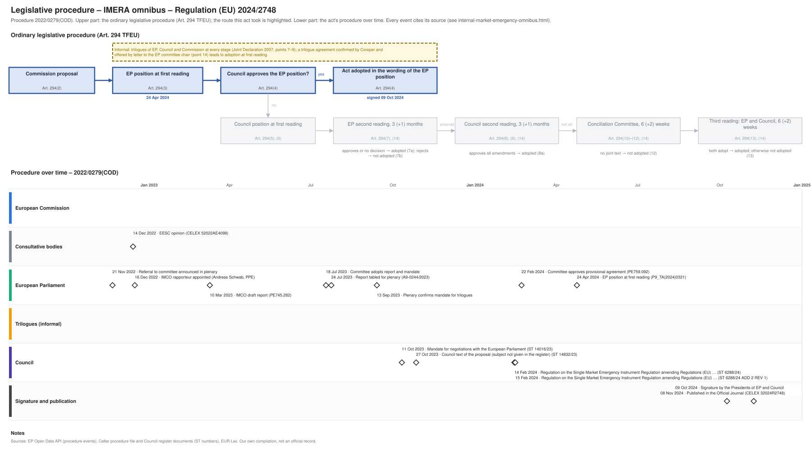

← Regulation timeline › IMERA omnibus › Legislative procedure · All procedures
Procedure 2022/0279(COD), completed. Drawing: SVG · PNG · PDF (A3) · draw.io · Page as Markdown: internal-market-emergency-omnibus.md
| Stage | Completed, published 08 Nov 2024 |
|---|---|
| Latest activity | 08 Nov 2024 · Signature and publication: Published in the Official Journal (CELEX 32024R2748) |

| Date | Actor | Event | Document | Source |
|---|---|---|---|---|
| 2022-11-21 | European Parliament | Referral to committee announced in plenary | EP procedure file | EP Open Data API, procedure 2022-0279 (REFERRAL) |
| 2022-12-14 | Consultative bodies | EESC opinion | CELEX 52022AE4098 | Cellar procedure file 2022/279 |
| 2022-12-16 | European Parliament | IMCO rapporteur appointed (Andreas Schwab, PPE) | EP procedure file | EP Open Data API, procedure 2022-0279 (participation RAPPORTEUR) |
| 2023-03-10 | European Parliament | IMCO draft report | PE745.282 | EP Open Data API, procedure 2022-0279 (COMMITTEE_TABLING_REPORT) |
| 2023-07-18 | European Parliament | Committee adopts report and mandate | EP procedure file | EP Open Data API, procedure 2022-0279 (COMMITTEE_ADOPTING_REPORT) |
| 2023-07-24 | European Parliament | Report tabled for plenary | A9-0244/2023 | EP Open Data API, procedure 2022-0279 (TABLING_PLENARY) |
| 2023-09-13 | European Parliament | Plenary confirms mandate for trilogues | EP procedure file | EP Open Data API, procedure 2022-0279 (PLENARY_ENDORSE_COMMITTEE_INTERINSTITUTIONAL_NEGOTIATIONS) |
| 2023-10-11 | Council | Mandate for negotiations with the European Parliament | ST 14016/23 | Cellar procedure file 2022/279 (Council register) |
| 2023-10-27 | Council | Council text of the proposal (subject not given in the register) | ST 14832/23 | Cellar procedure file 2022/279 (Council register) |
| 2024-02-14 | Council | Regulation on the Single Market Emergency Instrument Regulation amending Regulations (EU) … | ST 6288/24 | Cellar procedure file 2022/279 (Council register) |
| 2024-02-15 | Council | Regulation on the Single Market Emergency Instrument Regulation amending Regulations (EU) … | ST 6288/24 ADD 2 REV 1 | Cellar procedure file 2022/279 (Council register) |
| 2024-02-22 | European Parliament | Committee approves provisional agreement | PE759.092 | EP Open Data API, procedure 2022-0279 (COMMITTEE_APPROVE_PROVISIONAL_AGREEMENT) |
| 2024-04-24 | European Parliament | EP position at first reading (Art. 294(3) TFEU) | P9_TA(2024)0321 | EP Open Data API, procedure 2022-0279 (PLENARY_AMEND_PROPOSAL) |
| 2024-10-09 | Signature and publication | Signature by the Presidents of EP and Council | EP procedure file | EP Open Data API, procedure 2022-0279 (SIGNATURE) |
| 2024-11-08 | Signature and publication | Published in the Official Journal | CELEX 32024R2748 · en.md de.md | EP Open Data API, procedure 2022-0279 (PUBLICATION_OFFICIAL_JOURNAL) |
Every document the Council register, the EU database of the Parliament of Austria or the EP lists for the procedure, with its state: public documents link to the official file; documents that are not public link to their entry in the Austrian database where there is one (metadata only). "Unofficially leaked": a copy is known to circulate outside the institutions; it is not published here.
| Date | Document | Kind | Subject | Status | Text |
|---|---|---|---|---|---|
| 2022-09-19 | ST 12573/22 ADD 1 | council-transmission | COMMISSION STAFF WORKING DOCUMENT Subsidiarity Grid Accompanying the documents REGULATION OF THE EUROPEAN PARLIAMENT AND OF THE COUNCIL for a Single Market … | public status unknown | – |
| 2022-09-19 | ST 12573/22 ADD 2 | council-transmission | COMMISSION STAFF WORKING DOCUMENT IMPACT ASSESSMENT REPORT Accompanying the document REGULATION OF THE EUROPEAN PARLIAMENT AND OF THE COUNCIL for a Single … | public status unknown | – |
| 2022-09-19 | ST 12573/22 ADD 3 | council-transmission | COMMISSION STAFF WORKING DOCUMENT IMPACT ASSESSMENT REPORT Accompanying the document REGULATION OF THE EUROPEAN PARLIAMENT AND OF THE COUNCIL for a Single … | public status unknown | – |
| 2022-09-19 | ST 12573/22 ADD 4 | council-transmission | COMMISSION STAFF WORKING DOCUMENT EXECUTIVE SUMMARY OF THE IMPACT ASSESSMENT REPORT Accompanying the document REGULATION OF THE EUROPEAN PARLIAMENT AND OF THE … | public status unknown | – |
| 2022-09-19 | ST 12573/22 ADD 5 | council-transmission | REGULATORY SCRUTINY BOARD OPINION Proposal for a REGULATION OF THE EUROPEAN PARLIAMENT AND OF THE COUNCIL establishing a Single Market emergency instrument and … | public status unknown | – |
| 2022-09-19 | ST 12576/22 | council-transmission | Proposal for a REGULATION OF THE EUROPEAN PARLIAMENT AND OF THE COUNCIL amending Regulations (EU) 2016/424, (EU) 2016/425, (EU) 2016/426, (EU) 2019/1009 and … | public status unknown | – |
| 2022-09-20 | ST 12573/22 ADD 2 REV 1 | council-transmission | COMMISSION STAFF WORKING DOCUMENT IMPACT ASSESSMENT REPORT Accompanying the document REGULATION OF THE EUROPEAN PARLIAMENT AND OF THE COUNCIL for a Single … | public status unknown | – |
| 2022-09-21 | ST 12576/22 ADD 1 | council-transmission | COMMISSION STAFF WORKING DOCUMENT Subsidiarity Grid Accompanying the documents REGULATION OF THE EUROPEAN PARLIAMENT AND OF THE COUNCIL for a Single Market … | public status unknown | – |
| 2022-09-21 | ST 12576/22 ADD 2 | council-transmission | COMMISSION STAFF WORKING DOCUMENT IMPACT ASSESSMENT REPORT Accompanying the document REGULATION OF THE EUROPEAN PARLIAMENT AND OF THE COUNCIL for a Single … | public status unknown | – |
| 2022-09-21 | ST 12576/22 ADD 2 REV 1 | council-transmission | COMMISSION STAFF WORKING DOCUMENT IMPACT ASSESSMENT REPORT Accompanying the document REGULATION OF THE EUROPEAN PARLIAMENT AND OF THE COUNCIL for a Single … | public status unknown | – |
| 2022-09-21 | ST 12576/22 ADD 3 | council-transmission | COMMISSION STAFF WORKING DOCUMENT IMPACT ASSESSMENT REPORT Accompanying the document REGULATION OF THE EUROPEAN PARLIAMENT AND OF THE COUNCIL for a Single … | public status unknown | – |
| 2022-09-21 | ST 12576/22 ADD 4 | council-transmission | COMMISSION STAFF WORKING DOCUMENT EXECUTIVE SUMMARY OF THE IMPACT ASSESSMENT REPORT Accompanying the document REGULATION OF THE EUROPEAN PARLIAMENT AND OF THE … | public status unknown | – |
| 2022-09-21 | ST 12576/22 ADD 5 | council-transmission | REGULATORY SCRUTINY BOARD OPINION Proposal for a REGULATION OF THE EUROPEAN PARLIAMENT AND OF THE COUNCIL establishing a Single Market emergency instrument and … | public status unknown | – |
| 2022-12-05 | ST 15592/22 | council-transmission | Opinion on the application of the Principles of Subsidiarity and Proportionality | public status unknown | – |
| 2022-12-14 | CELEX 52022AE4098 | opinion | Opinion of the European Economic and Social Committee on: (a) Proposal for a regulation of the European Parliament and of the Council establishing a Single … | public | – |
| 2022-12-16 | ST 16155/22 | council-transmission | Opinion of the European Economic and Social Committee on the Proposal for a regulation of the European Parliament and of the Council amending Regulations (EU) … | public status unknown | – |
| 2022-12-21 | ST 16293/22 | council-transmission | Opinion on the application of the Principles of Subsidiarity and Proportionality | public status unknown | – |
| 2023-03-10 | PE745.282 | ep-draft-report | DRAFT REPORT on the proposal for a regulation of the European Parliament and of the Council amending Regulations (EU) 2016/424, (EU) 2016/425, (EU) 2016/426, … | public | – |
| 2023-03-29 | ST 7864/23 | council-transmission | Opinion on the application of the Principles of Subsidiarity and Proportionality | public status unknown | – |
| 2023-07-24 | A9-0244/2023 | ep-report | REPORT on the proposal for a regulation of the European Parliament and of the Council amending Regulations (EU) 2016/424, (EU) 2016/425, (EU) 2016/426, (EU) … | public | – |
| 2023-07-27 | ST 12220/23 | council-note | List of working papers (WK) distributed in the Working Party on Technical Harmonisation (SMEI Omnibus) in the Q1 2023 | public status unknown | – |
| 2023-07-31 | ST 12266/23 | council-note | List of working papers (WK) distributed in the Working Party on Technical Harmonisation (SMEI Omnibus) in the Q2 2023 | public status unknown | – |
| 2023-10-11 | ST 14016/23 | council-position | Mandate for negotiations with the European Parliament | public | – |
| 2023-10-27 | ST 14832/23 | council-text | Proposal for a REGULATION OF THE EUROPEAN PARLIAMENT AND OF THE COUNCIL amending Regulations (EU) 2016/424, (EU) 2016/425, (EU) 2016/426, (EU) 2019/1009 and … | public | – |
| 2024-02-14 | ST 6288/24 | agreed-text | Regulation on the Single Market Emergency Instrument Regulation amending Regulations (EU) 2016/424, (EU) 2016/425, (EU) 2016/426, (EU) 2019/1009 and (EU) No … | public | – |
| 2024-02-14 | ST 6288/24 ADD 1 | agreed-text | Regulation on the Single Market Emergency Instrument Regulation amending Regulations (EU) 2016/424, (EU) 2016/425, (EU) 2016/426, (EU) 2019/1009 and (EU) No … | public | – |
| 2024-02-14 | ST 6288/24 ADD 3 | agreed-text | Regulation on the Single Market Emergency Instrument Regulation amending Regulations (EU) 2016/424, (EU) 2016/425, (EU) 2016/426, (EU) 2019/1009 and (EU) No … | public | – |
| 2024-02-15 | ST 6288/24 ADD 2 REV 1 | agreed-text | Regulation on the Single Market Emergency Instrument Regulation amending Regulations (EU) 2016/424, (EU) 2016/425, (EU) 2016/426, (EU) 2019/1009 and (EU) No … | public | – |
| 2024-02-16 | PE759.092 | agreed-text | PROVISIONAL AGREEMENT RESULTING FROM INTERINSTITUTIONAL NEGOTIATIONS Proposal for a regulation of the European Parliament and of the Council amending … | public | – |
| 2024-02-16 | ST 6336/24 | council-note | Regulation on the Single Market Emergency Instrument Regulation amending Regulations (EU) 2016/424, (EU) 2016/425, (EU) 2016/426, (EU) 2019/1009 and (EU) No … | public status unknown | – |
| 2024-04-24 | P9_TA(2024)0321 | ep-position | Amending certain Regulations as regards the establishment of the Single Market Emergency Instrument | public | – |
| 2024-05-03 | PE 47/24 | council-note | REGULATION OF THE EUROPEAN PARLIAMENT AND OF THE COUNCIL amending Regulations (EU) No 305/2011, (EU) 2016/424, (EU) 2016/425, (EU) 2016/426, (EU) 2023/988 and … | public status unknown | – |
| 2024-06-18 | ST 10078/24 | council-note | Proposals under the ordinary legislative procedure expected to undergo the Corrigendum Procedure in the European Parliament (part I) | public status unknown | – |
| 2024-09-20 | ST 13041/24 | council-note | Draft REGULATION OF THE EUROPEAN PARLIAMENT AND OF THE COUNCIL amending Regulations (EU) No 305/2011, (EU) 2016/424, (EU) 2016/425, (EU) 2016/426, (EU) … | public status unknown | – |
| 2024-09-20 | ST 13041/24 ADD 1 | council-note | Draft REGULATION OF THE EUROPEAN PARLIAMENT AND OF THE COUNCIL amending Regulations (EU) No 305/2011, (EU) 2016/424, (EU) 2016/425, (EU) 2016/426, (EU) … | public status unknown | – |
| 2024-09-26 | ST 13858/24 | council-note | Voting result REGULATION OF THE EUROPEAN PARLIAMENT AND OF THE COUNCIL amending Regulations (EU) No 305/2011, (EU) 2016/424, (EU) 2016/425, (EU) 2016/426, (EU) … | public status unknown | – |
| 2024-10-10 | PE 47/24 REV 1 | council-note | REGULATION OF THE EUROPEAN PARLIAMENT AND OF THE COUNCIL AMENDING REGULATIONS (EU) NO 305/2011, (EU) 2016/424, (EU) 2016/425, (EU) 2016/426, (EU) 2023/988 AND … | public status unknown | – |
Unofficial Markdown conversions for reading, searching and project folders; only the official document is authentic. "Read" opens the rendered text on GitHub, where a link to a provision (#art-13, #rec-12, #annex-i) jumps to it.
| Date | Stage | Document | Markdown | Read |
|---|---|---|---|---|
| 2024-11-08 | oj | CELEX 32024R2748 | en de | GitHub |
| 2025-04-22 | corrigendum | CELEX 32024R2748R(01) | en de | GitHub |